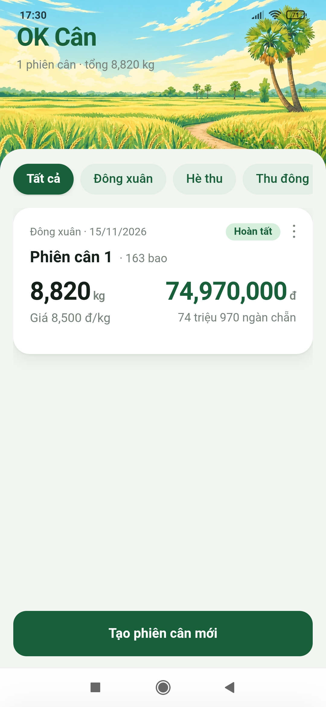
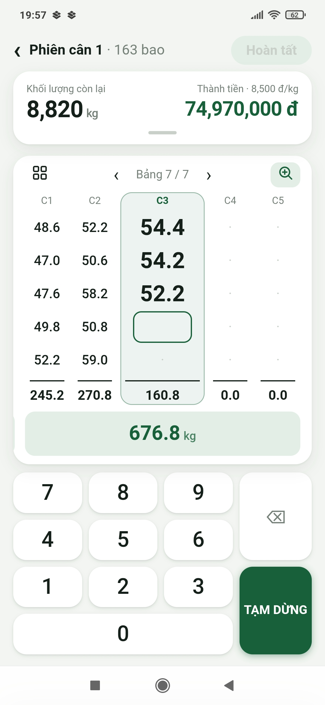
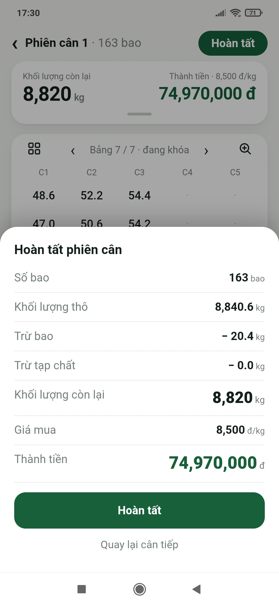

OK Cân
Ứng dụng hỗ trợ thương lái và người thu mua lúa quản lý các phiên cân ngay trên điện thoại. Từ nhập khối lượng, tính tiền đến lưu trữ và tra cứu thông tin, mọi thao tác được thiết kế trực quan, gọn gàng và thuận tiện. Hoạt động hoàn toàn ngoại tuyến, không cần kết nối Internet.
Sắp có trên Google Play
Chính sách bảo mật
Điểm nổi bật
- Quản lý phiên cân. Tạo và theo dõi các phiên thu mua lúa, sắp xếp theo mùa vụ để dễ dàng quản lý và tra cứu.
- Nhập liệu tập trung. Các thông tin cân được bố trí trên một màn hình, hạn chế thao tác chuyển trang và cuộn liên tục.
- Tính toán tự động. Tự động cộng tổng khối lượng và tính thành tiền theo đơn giá, giúp giảm thao tác tính toán thủ công.
- Chỉnh sửa linh hoạt. Dễ dàng thêm, sửa và điều chỉnh số liệu trong quá trình cân; kết quả được cập nhật tức thì.
- Phóng to và Dark Mode. Hỗ trợ điều chỉnh giao diện để số liệu dễ quan sát hơn, phù hợp với nhu cầu sử dụng khác nhau.
- Giao diện tùy chỉnh. Hỗ trợ các lựa chọn giao diện, mang đến trải nghiệm sử dụng linh hoạt và cá nhân hóa hơn.
- Hoạt động ngoại tuyến. Dữ liệu được lưu trữ ngay trên thiết bị, sử dụng ứng dụng mà không cần kết nối Internet.
Hình ảnh






OK Cân ưu tiên quyền riêng tư và dữ liệu cá nhân của người dùng. Thông tin được lưu trữ trên thiết bị, không yêu cầu tài khoản trực tuyến để sử dụng các chức năng chính. Xem thêm tại Chính sách bảo mật.